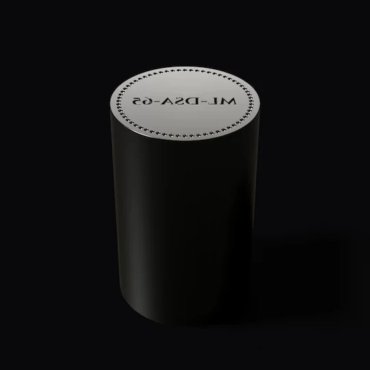
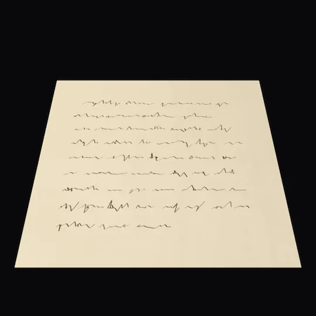
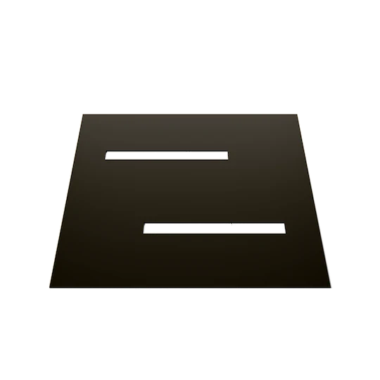
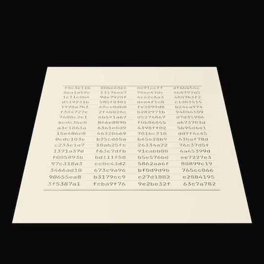
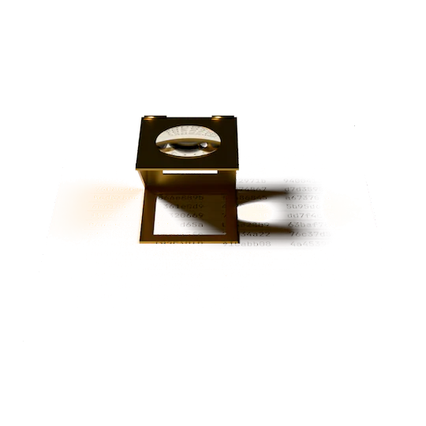

The identity token system
Identity built to be checked, not trusted.
For the banks, platforms and public services that will accept Europe’s digital identity wallets.
OpenID Certified: polaris-oid4vp 1.0.0rc7, OpenID4VP 1.0 + HAIP 1.0 Verifier profile.
IThe check
One minute, from an empty folder.
Don’t take our word for it. One script runs an outside wallet against the verifier, then sends three controls that must each be refused.
$ mkdir polaris-quick && cd polaris-quick
$ r=https://raw.githubusercontent.com/EgorKhaklin/polaris-id/main
$ curl -fsSLO $r/lab/interop/eudi-dev/run.sh
$ curl -fsSLO $r/lab/interop/waltid/issue_sdjwt_vc.py
$ curl -fsSLO $r/lab/interop/requirements.txt
$ bash run.sh
wallet ghcr.io/dominikschlosser/eudi-dev:v2.3.7
installed polaris-oid4vp 1.0.0
== genuine presentation
ok the verifier accepted it
<- 200 authentic
== control (b): the same request again, after it was answered
ok refused at the request stage
== control (c): a launch URI whose client_id is not the signed request's
ok the wallet refused the request
== control (a): the verifier trusts a different issuer key under the same kid
ok the verifier refused the issuerRESULT: accepted, and all three controls refused
Recorded 15 October 2026, abridged: 16 seconds from an empty folder, with the wallet’s image already pulled.
IIEvidence
Tested in the open.
Working software, tested against 15 outside projects.
- EUDI Wallet OpenID4VP libraryKotlin · European Commission
- EUDI Wallet OpenID4VP librarySwift · European Commission
- EUDI PID issuerEuropean Commission reference issuer
- walt.id Wallet APIKotlin · wallet
- CredoTypeScript · wallet · OpenWallet Foundation
- eudi-devGo · wallet, OpenID Certified at v2.3.7
- OID4VCgoGo · wallet, OpenID Certified at 0.12.0
- ProtocolSoupGo · wallet harness
- Procivis One CoreRust · wallet
- Yivi app (built on irmago)Dart · wallet in developer mode · Yivi
- vckKotlin library · A-SIT Plus
- MultipazKotlin library · OpenWallet Foundation
- AxleKotlin · OpenWallet Foundation Labs · driven by a harness written here
- openid4vpRust · SpruceID conformance adapter
- ERICATypeScript · verifier testing tool
A project listed here means Polaris was tested with it, not that it endorses Polaris.

polaris-oid4vp version 1.0.0rc7 is OpenID Certified by Egor Khaklin to the OpenID4VP 1.0 + HAIP 1.0 Verifier profile for SD-JWT VC; the OpenID Foundation lists it. The current release is 1.0.0.
- First outside operator
- OID4VCgo’s CI runs it daily, since 11 October 2026.
- Scoreboard
- Dated runs are kept in a public scoreboard. Also listed among the IETF SD-JWT implementations.
IIIHow it works
Issue. Hold. Verify.
-
Issue
An authority signs the credential with ML-DSA-65. The algorithm is data, so an issuer can switch it; each verifier takes a software update. A wallet's copy is signed with ES256, the algorithm Europe's wallets use today.
-
Hold
The person keeps it and shows only what they choose.
Zero-knowledge mode proves a valid token exists without revealing identity.
-
Verify
Anyone checks it offline, against published keys: no server, no network.





Illustrations. No real keys or data are shown.
IVThe rules
The rules live in the database.
Four are held by the database itself; all five are checked on every build.
- The audit record is append-only.
- A zero-knowledge verification stores no credential identifier.
- One active credential per person.
- The disclosure level is decided by the server, not the caller.
- Identity is not money.
No monetary table or column exists.
VThe hard cases
When it goes wrong.
Duress-aware
What a coercer sees
Code one
Verified
Code two
Verified
Duress recorded, silently.
A second code verifies normally and silently records duress.
Total loss
Lose every device and come back through three channels, one of them a witness from a second authority.
Algorithm migration
Two signatures during a move between algorithms; the database never leaves a token without an active one.
VIWhy now
Every EU member state must provide a digital identity wallet.
More than 800 million
people have no official ID.
2.8 billion
have no digital ID they can use online.
Source: World Bank, Global progress in identification, 2025.
Polaris is built to enrol a person with no documents through a trusted referee.
VIIMission
One person. One token. That is the goal.
Proving who you are can take a stack of ID cards and papers. The goal: one token that stands in for all of them, held by you and checked by anyone you show it to.
Today
Tested in the open
Working software, tested against 15 outside projects.
Next
The United States
The goal: IDs that authorities in the United States issue with Polaris, and a verifier anyone can run to check them. Already built into the software: one active token per person.
Then
The world
The goal: one open way to prove who you are, anywhere, with a token from any trusted authority. Checking already works offline, with no call to Polaris.
Peace of mind, without surveillance.
Our aim is a safer, more peaceful world, where anyone can prove who they are without being watched.
Our purpose: no one should be forced to give up or hand over their identity.
Fixus inter mutabilia
VIII
Work with us.
Design partners and investors: